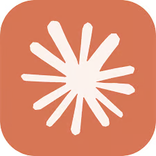

◧ MARKETPLACE CONNECT
@tiopstecnologia
Vende em marketplace?
Sua loja
dentro do
Claude
ou do
ChatGPT.
Uns
2 minutos
por loja.
Autoriza a sua conta
Cola o conector
Pede em português
Sem código, sem planilha, sem TI.

Quer o passo a passo?
Comenta
CONNECT
que eu te mando o link no direct.
TIOPS